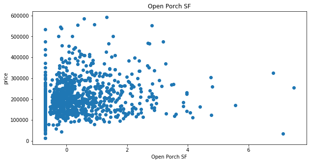

Modelling Ames housing data to predict prices
Imports
# imports
import pandas as pd
import numpy as np
import matplotlib.pyplot as plt
import seaborn as sns
import altair as alt
from sklearn.linear_model import Lasso, LassoCV, LinearRegression, Ridge, RANSACRegressor
from sklearn_pandas import CategoricalImputer
from sklearn_pandas import DataFrameMapper
from sklearn.preprocessing import StandardScaler, LabelEncoder, PolynomialFeatures, LabelBinarizer, OrdinalEncoder
from sklearn.impute import SimpleImputer
from sklearn.model_selection import train_test_split
from sklearn.neighbors import KNeighborsClassifier
from sklearn.metrics import r2_score, mean_squared_error, mean_absolute_error
from sklearn.ensemble import RandomForestClassifier
# make life easier
pd.set_option('display.max_rows', None)
import warnings
warnings.simplefilter(action='ignore', category=FutureWarning)
import numpy as np
from sklearn.preprocessing import label_binarize, LabelBinarizer
from sklearn.base import TransformerMixin
class SafeLabelBinarizer(TransformerMixin):
def __init__(self):
self.lb = LabelBinarizer()
def fit(self, X):
X = np.array(X)
self.lb.fit(X)
self.classes_ = self.lb.classes_
def transform(self, X):
K = np.append(self.classes_, ['__FAKE__'])
X = label_binarize(X, K, pos_label=1, neg_label=0)
X = np.delete(X, np.s_[-1], axis=1)
return X
def fit_transform(self, X):
self.fit(X)
return self.transform(X)
Load data
load data into pdf, only mark missing values as NaN.
df = pd.read_csv('data/train.csv', na_values = '', keep_default_na = False)
Clean data
drop outliers
df = df.drop(df[df['Gr Liv Area'] > 4000].index)
find columns with NaN values
na_df = pd.DataFrame(df.isna().sum(), columns = ['na_values'])
nz = na_df['na_values'].to_numpy().nonzero()
na_df.iloc[nz]
| na_values | |
|---|---|
| Lot Frontage | 330 |
| Mas Vnr Type | 22 |
| Mas Vnr Area | 22 |
| Bsmt Qual | 1 |
| Bsmt Cond | 1 |
| Bsmt Exposure | 4 |
| BsmtFin Type 1 | 1 |
| BsmtFin SF 1 | 1 |
| BsmtFin Type 2 | 2 |
| BsmtFin SF 2 | 1 |
| Bsmt Unf SF | 1 |
| Total Bsmt SF | 1 |
| Bsmt Full Bath | 2 |
| Bsmt Half Bath | 2 |
| Garage Yr Blt | 114 |
| Garage Finish | 1 |
| Garage Cars | 1 |
| Garage Area | 1 |
| Garage Qual | 1 |
| Garage Cond | 1 |
drop NaN values from columns with few NaN values
df = df.dropna(subset=['Bsmt Qual','Bsmt Cond', 'Bsmt Exposure', 'BsmtFin Type 1', 'BsmtFin SF 1', 'BsmtFin Type 2', 'BsmtFin SF 2', 'Bsmt Unf SF', 'Total Bsmt SF','Bsmt Full Bath', 'Bsmt Half Bath', 'Garage Finish', 'Garage Cars', 'Garage Area', 'Garage Qual', 'Garage Cond'])
na_df = pd.DataFrame(df.isna().sum(), columns = ['na_values'])
nz = na_df['na_values'].to_numpy().nonzero()
na_df.iloc[nz]
| na_values | |
|---|---|
| Lot Frontage | 330 |
| Mas Vnr Type | 22 |
| Mas Vnr Area | 22 |
| Garage Yr Blt | 113 |
Train_test split
target = 'SalePrice'
y = df[target]
X = df.drop([target], axis = 1)
X_train, X_test, y_train, y_test = train_test_split(X, y, test_size=0.25, random_state=42)
Dataframe mapper
Dataframe mapper to impute missing values, labelbinarize nominal values, ordinal encode ordinal values, label encode binary values and standard scale continuous values
mapper = DataFrameMapper([
('MS SubClass', SafeLabelBinarizer()),
('MS Zoning', SafeLabelBinarizer()),
(['Lot Frontage'], [SimpleImputer(strategy = 'constant', fill_value = 0), StandardScaler()]),
(['Lot Area'], StandardScaler()),
('Street', SafeLabelBinarizer()),
('Alley', SafeLabelBinarizer()),
(['Lot Shape'], OrdinalEncoder(categories = [['Reg', 'IR1', 'IR2', 'IR3']])),
(['Land Contour'], OrdinalEncoder(categories = [['Lvl', 'Low', 'Bnk', 'HLS']])),
(['Utilities'], SafeLabelBinarizer()),
('Lot Config', SafeLabelBinarizer()),
(['Land Slope'], OrdinalEncoder(categories = [['Gtl', 'Mod', 'Sev']])),
('Neighborhood', SafeLabelBinarizer()),
('Condition 1', SafeLabelBinarizer()),
('Condition 2', SafeLabelBinarizer()),
('Bldg Type', SafeLabelBinarizer()),
('House Style', SafeLabelBinarizer()),
(['Overall Qual'], OrdinalEncoder(categories = [[1, 2, 3, 4, 5, 6, 7, 8, 9, 10]])),
(['Overall Cond'], OrdinalEncoder(categories = [[1, 2, 3, 4, 5, 6, 7, 8, 9]])),
(['Year Built'], None),
(['Year Remod/Add'], None),
('Roof Style', SafeLabelBinarizer()),
('Roof Matl', SafeLabelBinarizer()),
('Exterior 1st', SafeLabelBinarizer()),
('Exterior 2nd', SafeLabelBinarizer()),
(['Mas Vnr Type'], [SimpleImputer(strategy = 'constant', fill_value = 'Not_applicable'), SafeLabelBinarizer()]),
(['Mas Vnr Area'], [SimpleImputer(strategy = 'constant', fill_value = 0), StandardScaler()]),
(['Exter Qual'], OrdinalEncoder(categories = [['Ex', 'Gd', 'TA', 'Fa']])),
(['Exter Cond'], OrdinalEncoder(categories = [['Ex', 'Gd', 'TA', 'Fa', 'Po']])),
('Foundation', SafeLabelBinarizer()),
(['Bsmt Qual'], SafeLabelBinarizer()),
(['Bsmt Cond'], OrdinalEncoder(categories = [['Ex', 'Gd', 'TA', 'Fa', 'Po', 'NA']])),
(['Bsmt Exposure'], OrdinalEncoder(categories = [['NA', 'No', 'Mn', 'Av', 'Gd']])),
(['BsmtFin Type 1'], OrdinalEncoder(categories = [['NA', 'Unf', 'LwQ', 'Rec', 'BLQ', 'ALQ','GLQ']])),
(['BsmtFin SF 1'], StandardScaler()),
(['BsmtFin Type 2'], [SimpleImputer(strategy = 'constant', fill_value = 'Not_applicable'), OrdinalEncoder(categories = [['NA', 'Unf', 'LwQ', 'Rec', 'BLQ', 'ALQ','GLQ']])]),
(['BsmtFin SF 2'], StandardScaler()),
(['Bsmt Unf SF'], StandardScaler()),
(['Total Bsmt SF'], StandardScaler()),
(['Heating'], SafeLabelBinarizer()),
(['Heating QC'], OrdinalEncoder(categories = [['Ex', 'Gd', 'TA', 'Fa', 'Po']])),
('Central Air', LabelEncoder()),
(['Electrical'], OrdinalEncoder(categories = [['SBrkr', 'FuseA', 'FuseF', 'FuseP', 'Mix']])),
(['1st Flr SF'], StandardScaler()),
(['2nd Flr SF'], StandardScaler()),
(['Low Qual Fin SF'], StandardScaler()),
(['Gr Liv Area'], StandardScaler()),
('Bsmt Full Bath', None),
('Bsmt Half Bath', None),
('Full Bath', None),
('Half Bath', None),
('Bedroom AbvGr', None),
('Kitchen AbvGr', None),
(['Kitchen Qual'], OrdinalEncoder(categories = [['Fa', 'TA', 'Gd', 'Ex']])),
('TotRms AbvGrd', None),
(['Functional'], SafeLabelBinarizer()),
('Fireplaces', None),
(['Fireplace Qu'], OrdinalEncoder(categories = [['NA', 'Po', 'Fa', 'TA', 'Gd', 'Ex']])),
('Garage Type', SafeLabelBinarizer()),
(['Garage Yr Blt'], [SimpleImputer(strategy = 'constant', fill_value = 0), StandardScaler()]),
(['Garage Finish'], OrdinalEncoder(categories = [['NA', 'Unf', 'RFn', 'Fin']])),
('Garage Cars', None),
(['Garage Area'], StandardScaler()),
(['Garage Qual'], OrdinalEncoder(categories = [['Ex', 'Gd', 'TA', 'Fa', 'Po', 'NA']])),
(['Garage Cond'], OrdinalEncoder(categories = [['Ex', 'Gd', 'TA', 'Fa', 'Po', 'NA']])),
(['Paved Drive'], OrdinalEncoder(categories = [['Y', 'P', 'N']])),
(['Wood Deck SF'], StandardScaler()),
(['Open Porch SF'], StandardScaler()),
(['Enclosed Porch'], StandardScaler()),
(['3Ssn Porch'], StandardScaler()),
(['Screen Porch'], StandardScaler()),
(['Pool Area'], StandardScaler()),
(['Pool QC'], OrdinalEncoder(categories = [['NA', 'Fa', 'TA', 'Gd', 'Ex']])),
(['Fence'], OrdinalEncoder(categories = [['NA', 'MnWw', 'GdWo', 'MnPrv', 'GdPrv']])),
(['Misc Feature'], SafeLabelBinarizer()),
(['Misc Val'], StandardScaler()),
('Mo Sold', None),
('Yr Sold', None),
('Sale Type', SafeLabelBinarizer())], df_out = True)
Naive model
House prices go up as the number of rooms increase.
linreg = LinearRegression()
linreg.fit(X_train[['Bedroom AbvGr']], y_train)
linreg.score(X_test[['Bedroom AbvGr']], y_test)
0.007158416954324398
plt.figure(figsize = (8,8))
plt.scatter(X_train[['Bedroom AbvGr']], y_train)
plt.xlabel('Number of Bedroom aboveground')
plt.ylabel('Price of property')
plt.title('Ames housing prices');

It seems that the number of bedrooms can only predict the pricing of a house with 0.7% accuracy.
Exploratory analysis
Transfrom train data with mapper.
Z_train = mapper.fit_transform(X_train)
Scatter plots to see relationship of features with y. The same result can be achieved through pairplot in seaborn, but doing it through a for loop allowed me to have clearer figures in reasonable sizes.
continuous = ['Lot Frontage', 'Lot Area', 'Year Built', 'Year Remod/Add', 'Mas Vnr Area', 'BsmtFin SF 1', 'BsmtFin SF 2', 'Bsmt Unf SF', 'Total Bsmt SF', '1st Flr SF', '2nd Flr SF', 'Low Qual Fin SF', 'Gr Liv Area', 'Garage Area', 'Wood Deck SF', 'Open Porch SF', 'Enclosed Porch', '3Ssn Porch', 'Screen Porch', 'Pool Area', 'Misc Val']
for feature in continuous:
plt.figure(figsize = (10,5))
plt.scatter(Z_train[feature], y_train)
plt.ylabel('price')
plt.xlabel(feature)
plt.title(feature)
plt.show()





From the scatter plots Lot frontage, lot area, year built, total bsmt SF, gr living area and garage area seem to be correlated with the price.
Feature selection through RFE
from sklearn.feature_selection import RFE
select = RFE(RandomForestClassifier(n_estimators=10, random_state=42), n_features_to_select=10)
select.fit(Z_train, y_train)
Z_train_selected = select.transform(Z_train)
Put selected columns in a df to see.
selection = select.get_support()
select_df = pd.DataFrame(zip(Z_train.columns.ravel(), selection), columns = ['feature', 'bool'])
select_df[select_df['bool']]
| feature | bool | |
|---|---|---|
| 24 | Lot Area | True |
| 99 | Year Built | True |
| 163 | BsmtFin SF 1 | True |
| 166 | Bsmt Unf SF | True |
| 167 | Total Bsmt SF | True |
| 176 | 1st Flr SF | True |
| 179 | Gr Liv Area | True |
| 204 | Garage Yr Blt | True |
| 207 | Garage Area | True |
| 225 | Mo Sold | True |
See how our model was doing without the selected columns:
linreg.fit(Z_train, y_train)
linreg.score(Z_train, y_train)
0.9402831425623859
See how it is doing after feature selection
linreg.fit(Z_train_selected, y_train)
linreg.score(Z_train_selected, y_train)
0.8041537657575873
Try different models
Linreg:
linreg.fit(Z_train_selected, y_train)
linreg.score(Z_train_selected, y_train)
0.8041537657575873
Lasso:
lassomodel = Lasso()
lassomodel.fit(Z_train_selected, y_train)
lassomodel.score(Z_train_selected, y_train)
0.8041537609180501
Ridge:
ridgemodel = Ridge()
ridgemodel.fit(Z_train_selected, y_train)
ridgemodel.score(Z_train_selected, y_train)
0.8041534321047469
RANSAC:
rsmodel = RANSACRegressor()
rsmodel.fit(Z_train_selected, y_train)
rsmodel.score(Z_train_selected, y_train)
0.7748606219972884
Evaluation
Try out a few metrics on these models to see how they measure (Do not fit or fit_transform Z_test, only transform).
Z_test = mapper.transform(X_test)
Z_test_selected = select.transform(Z_test)
linreg_pred = linreg.predict(Z_test_selected)
lasso_pred = lassomodel.predict(Z_test_selected)
ridge_pred = ridgemodel.predict(Z_test_selected)
rs_pred = rsmodel.predict(Z_test_selected)
metrics_df = pd.DataFrame([
('linreg', r2_score(linreg_pred, y_test), mean_squared_error(linreg_pred, y_test), mean_absolute_error(linreg_pred, y_test)),
('lasso', r2_score(lasso_pred, y_test), mean_squared_error(lasso_pred, y_test), mean_absolute_error(lasso_pred, y_test)),
('ridge', r2_score(ridge_pred, y_test), mean_squared_error(ridge_pred, y_test), mean_absolute_error(ridge_pred, y_test)),
('RANSAC', r2_score(rs_pred, y_test), mean_squared_error(rs_pred, y_test), mean_absolute_error(rs_pred, y_test))
], columns = ['score', 'r2 score', 'mean squared error', 'mean absolute error'])
metrics_df
| score | r2 score | mean squared error | mean absolute error | |
|---|---|---|---|---|
| 0 | linreg | 0.695536 | 1.529074e+09 | 26749.600252 |
| 1 | lasso | 0.695534 | 1.529023e+09 | 26748.818246 |
| 2 | ridge | 0.695444 | 1.528708e+09 | 26742.650040 |
| 3 | RANSAC | 0.628390 | 1.678275e+09 | 27572.785348 |
Since linreg, lasso and ridge are showing simmilar scores and errors, any one of the three should work. I will pick Lasso in this case because we are dealing with a lot of features in this dataset and lasso can help minimize unimportant features.
Pipeline
Make pipeline for new data
from sklearn.pipeline import make_pipeline
pipe = make_pipeline(mapper, select, lassomodel)
pipe.fit(X_train, y_train)
pipe.score(X_test, y_test)
0.7651994737908446
Conclusion and recommendation
Housing prices can be predicted with 76.5% accuracy through this model.
- Agricultural zones,
- industrial zones,
- all public utilities(electricity, gas, water),
- proximity to north-south railroad,
- overall quality,
- imitation stucco on the exterior,
- stone foundation,
- salavge only properties,
- miscellenious features,
- 15% down payment contract payment option on sale or
- just contracted homes
are the factors affecting sale prices in this dataset.
alt.renderers.enable('notebook')
final_feature_df = select_df[select_df['bool']]
final_features = list(set(final_feature_df.feature.tolist()) - {'Garage Yr Blt', 'Mo Sold'})
alt_df = pd.DataFrame(Z_train_selected, columns = final_feature_df.feature.tolist())
alt_df['y'] = 0
alt_df['y'] = y_train.values
charts = []
colors = ['purple', 'darkblue', 'skyblue', 'limegreen', 'gold', 'orangered', 'red', 'pink']
sns.regplot(alt_df[final_features[1]], alt_df['y'], color = colors[1], scatter_kws={'alpha':0.3})
plt.ylabel('Price')
plt.title(final_features[1]);
sns.regplot(alt_df[final_features[2]], alt_df['y'], color = colors[2], scatter_kws={'alpha':0.3})
plt.ylabel('Price')
plt.title(final_features[2]);

sns.regplot(alt_df[final_features[3]], alt_df['y'], color = colors[3], scatter_kws={'alpha':0.3})
plt.ylabel('Price')
plt.title(final_features[3]);
sns.regplot(alt_df[final_features[4]], alt_df['y'], color = colors[4], scatter_kws={'alpha':0.3})
plt.ylabel('Price')
plt.title(final_features[4]);
sns.regplot(alt_df[final_features[5]], alt_df['y'], color = colors[5], scatter_kws={'alpha':0.3})
plt.ylabel('Price')
plt.title(final_features[5]);

sns.regplot(alt_df[final_features[6]], alt_df['y'], color = colors[6], scatter_kws={'alpha':0.3})
plt.ylabel('Price')
plt.title(final_features[6]);